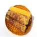
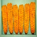
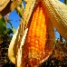
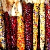

Welcome To CornHub
Best Corn WebsiteCorn Hub is a best corn portal to engage Filipino and foreign corn lovers. The site can give enjoyment and products to all internet users.
<
Login

Dent Corn
Dent corn, also known as grain corn, is a type of field corn with a high soft starch content. It received its name because of the small indentation, or dent, at the crown of each kernel on a ripe ear of corn. Reid's Yellow Dent is a variety developed by central Illinois farmer James L. Reid.

Waxy Corn
Waxy corn or glutinous corn is a type of field corn characterized by its sticky texture when cooked as a result of larger amounts of amylopectin. The corn was first described from a specimen from China in 1909.

Amylomaize Corn
Amylomaize was a term coined in the late 1940s by Robert P. Bear of Bear Hybrids Corn Company in Decatur, Illinois to describe his discovery and commercial breeding of a cornstarch with high amylose content, also called high amylose starch.

Flint Corn
Flint corn is a variant of maize, the same species as common corn. Because each kernel has a hard outer layer to protect the soft endosperm, it is likened to being hard as flint; hence the name. The six major types of corn are dent corn, flint corn, pod corn, popcorn, flour corn, and sweet corn.
created by Limuel Ganal Jr. | BSCS 1-B